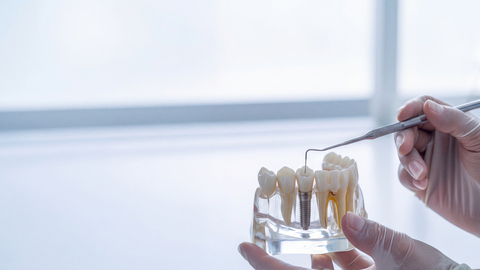
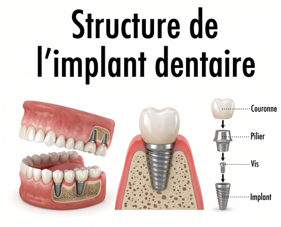
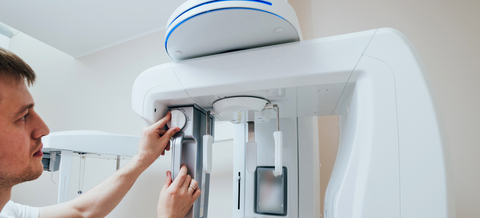
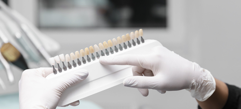
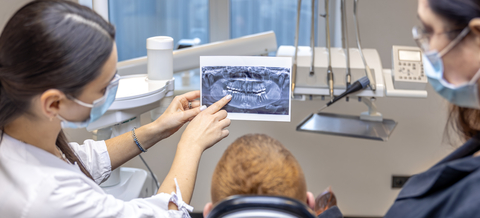

Implant dentaire à Charenton-le-Pont
139 rue de Paris, Charenton-le-Pont · métro Liberté (ligne 8) · aux portes de Paris 12e
Qu'est-ce qu'un implant dentaire ?
Un implant dentaire est une racine artificielle, le plus souvent en titane, placée dans l'os de la mâchoire pour remplacer une dent absente. Une couronne vient ensuite s'y fixer.
Un implant dentaire est une petite vis, généralement en titane, insérée dans l'os à l'emplacement d'une dent perdue pour en remplacer la racine. Il se compose de trois éléments : l'implant lui-même, qui reste dans l'os ; le pilier, une pièce de liaison vissée dessus ; la couronne, c'est-à-dire la partie visible de la dent.
Avec le temps, l'os se soude à la surface de l'implant. On appelle ce phénomène l'ostéointégration. C'est lui qui donne à l'implant sa stabilité et permet ensuite de mâcher normalement.
Contrairement à un bridge, l'implant ne prend pas appui sur les dents voisines : il n'est pas nécessaire de les tailler.
Au cabinet du Dr Patrick Lellouche, 139 rue de Paris à Charenton-le-Pont (métro Liberté, ligne 8), l'étude implantaire se fait avec la radio panoramique 3D du cabinet. La pose de l'implant a lieu sur place ; la couronne est réalisée par un laboratoire de prothèse en France.
Entre la pose et la dent définitive, il faut compter en général 3 mois.
L'Assurance Maladie ne rembourse pas l'implant. La couronne posée dessus est remboursée en partie, sur une base de 107,50 €. Vous recevez un devis écrit avant tout traitement.

Pour qui ? Les indications
L'implant s'adresse aux adultes qui ont perdu une ou plusieurs dents, après une extraction, un traumatisme ou une maladie des gencives.
Il peut servir à :
- remplacer une seule dent, avec une couronne sur implant ;
- remplacer plusieurs dents voisines, avec un bridge sur implants ;
- stabiliser un appareil complet qui bouge, surtout à la mâchoire du bas.
Trois conditions sont nécessaires : un volume d'os suffisant (ou qu'on peut reconstruire), des gencives saines et un état de santé compatible avec un petit geste chirurgical. Chez les jeunes, on attend la fin de la croissance des mâchoires.

Les étapes du traitement au cabinet
Un traitement implantaire se déroule en plusieurs rendez-vous étalés sur quelques mois. Voici comment il se passe au cabinet de Charenton-le-Pont.
La consultation et le bilan 3D
Le premier rendez-vous sert à examiner votre bouche, à faire le point sur votre santé générale et sur vos médicaments, puis à réaliser une radio panoramique 3D au cabinet. Cet examen montre la hauteur et l'épaisseur de l'os, ainsi que la position des sinus et des nerfs.
Le Dr Lellouche vous présente ensuite les solutions possibles, implant ou non, avec leurs avantages et leurs limites. Vous repartez avec un devis détaillé. Rien n'est engagé tant que vous ne l'avez pas signé.
Si l'os manque : greffe ou comblement osseux
Quand une dent est absente depuis longtemps, l'os a souvent fondu. Une greffe ou un comblement osseux peut alors être proposé, avant la pose ou en même temps. Au maxillaire, il s'agit parfois d'un comblement de sinus. Cette étape ajoute en général quelques mois au traitement.
La pose de l'implant
La pose se fait au cabinet, sous anesthésie locale. Après avoir préparé un logement dans l'os, le praticien y place l'implant, puis referme la gencive si besoin. Pour un implant unitaire, l'intervention dure environ une heure.
La cicatrisation osseuse
Il faut ensuite laisser l'os se souder à l'implant. Ce délai est en général de 3 mois, souvent plus court à la mâchoire du bas qu'à celle du haut. Si la dent manquante est visible, une solution provisoire peut être prévue pendant cette période : un appareil très léger remplace la dent manquante. En zone esthétique, un pilier provisoire avec une couronne provisoire est parfois possible.
La couronne sur implant
Une fois l'implant stable, une empreinte numérique est prise avec le scanner intra-oral du cabinet. Le pilier puis la couronne sont fixés sur l'implant, et l'occlusion (la façon dont vos dents se rencontrent) est réglée. La couronne est fabriquée par un laboratoire de prothèse en France. Le détail des matériaux est expliqué sur notre page consacrée à la couronne dentaire.

La pose d'un implant fait-elle mal ?
Pendant l'intervention, l'anesthésie locale supprime la douleur : vous ressentez des vibrations, rien de plus. Les consignes à suivre après l'intervention vous sont expliquées au cabinet.
Quelle est la durée de vie d'un implant ?
Les études cliniques rapportent qu'environ 95 % des implants posés pour remplacer une dent sont toujours en place après dix ans. Un implant peut durer bien plus longtemps, mais ce chiffre reste une moyenne, pas une garantie individuelle.
Ce qui fait la différence, c'est l'entretien. La principale complication à long terme est la péri-implantite, une inflammation de la gencive et de l'os autour de l'implant. Une méta-analyse de Derks et Tomasi, publiée en 2015 dans le Journal of Clinical Periodontology, l'estime en moyenne à 22 % des patients porteurs d'implants. Une étude de Costa et al. (2012), qui a suivi pendant cinq ans des patients présentant déjà une inflammation de la gencive autour de l'implant, a observé une péri-implantite chez 43,9 % de ceux qui ne venaient pas aux séances d'entretien, contre 18,0 % chez ceux qui y venaient.
Concrètement :
- brossez-vous les dents deux fois par jour, en insistant au ras de la gencive autour de l'implant ;
- utilisez des brossettes interdentaires adaptées ;
- venez en contrôle au moins une fois par an, avec une radio quand c'est utile.
Risques et contre-indications
La pose d'un implant est un acte chirurgical. Comme tout acte de ce type, elle comporte des risques : infection, saignement, implant qui ne se soude pas à l'os et doit être retiré, plus rarement atteinte d'un nerf. Le bilan 3D sert justement à limiter ces risques.
Les contre-indications définitives sont rares. Elles concernent par exemple certains traitements anti-résorption osseuse par voie intraveineuse prescrits dans le cadre d'un cancer, une radiothérapie de la mâchoire ou un état de santé très fragile.
D'autres situations augmentent le risque d'échec sans forcément l'interdire : le tabac, un diabète déséquilibré, une maladie des gencives non traitée, une hygiène insuffisante. Un diabète bien équilibré n'est pas un obstacle. Signalez toujours vos traitements, en particulier contre l'ostéoporose, les anticoagulants et les corticoïdes.

Prix et remboursement d'un implant en France
Le coût d'un implant se compose de trois parties, qui ne sont pas prises en charge de la même façon.
L'implant et le pilier : ce sont des actes hors nomenclature. Leurs honoraires sont libres et l'Assurance Maladie ne les rembourse pas.
La couronne sur implant : elle est remboursée sur une base de 107,50 €, à 60 % en 2026, soit 64,50 €. Elle relève du panier à tarifs libres et n'entre pas dans le dispositif 100 % Santé.
La greffe osseuse, si elle est nécessaire, est en général facturée en plus.
Votre mutuelle peut prévoir un forfait « implantologie » ou un remboursement en pourcentage de la base. Le plus simple est de lui envoyer le devis remis par le cabinet.
Honoraires du cabinet : le cabinet est conventionné secteur 1. L'implant, le pilier et la couronne sont facturés sur devis, remis avant tout traitement. Le cabinet accepte la carte Vitale, la carte bancaire, les espèces, le chèque et le virement. Voir aussi honoraires et remboursements.
Les alternatives à l'implant
L'implant n'est pas la seule façon de remplacer une dent. Le choix se fait avec vous, selon votre bouche, votre santé et votre budget.
Le bridge : une fausse dent est fixée sur les deux dents voisines, qu'il faut tailler. Le traitement est plus court et certains bridges font partie du panier 100 % Santé, selon le matériau et la dent remplacée.
La prothèse amovible (appareil) : c'est la solution la moins invasive. Les prothèses en résine font partie du panier 100 % Santé.
Ne rien remplacer : c'est possible pour certaines dents du fond, mais les dents voisines ont tendance à bouger avec le temps.
Ces options doivent figurer sur votre devis, avec leur prise en charge.
Prendre rendez-vous pour un bilan implantaire
Pour savoir si un implant est possible dans votre cas, la première étape est une consultation avec bilan. Le Dr Patrick Lellouche, chirurgien-dentiste, reçoit au 139 rue de Paris à Charenton-le-Pont, au pied du métro Liberté (ligne 8), aux portes de Paris 12e, le lundi, le mercredi, le jeudi et le vendredi de 9h30 à 19h (fermé les autres jours). Le rendez-vous se prend sur Doctolib ou au 01 43 68 07 80. Consultations possibles en français, en anglais et en espagnol.
Questions fréquentes sur l'implant dentaire
Combien coûte un implant dentaire à Charenton-le-Pont ?
Le prix dépend du nombre d'implants, d'une éventuelle greffe osseuse et du type de couronne. L'implant et le pilier sont à honoraires libres et ne sont pas remboursés par l'Assurance Maladie. Au cabinet du Dr Lellouche, un devis écrit et détaillé vous est remis après le bilan 3D, avant tout engagement.
L'implant dentaire est-il remboursé par la Sécurité sociale ?
Non. La pose d'un implant est un acte hors nomenclature, que l'Assurance Maladie ne rembourse pas. Seule la couronne posée sur l'implant est prise en charge, sur une base de 107,50 €, soit 64,50 € au taux de 60 % appliqué en 2026. Votre mutuelle peut prévoir un forfait implant.
La pose d'un implant fait-elle mal ?
La pose se fait sous anesthésie locale : vous sentez des pressions, pas de douleur pendant l'intervention. Les consignes à suivre ensuite vous sont expliquées au cabinet.
Combien de temps entre la pose de l'implant et la dent définitive ?
Comptez en général 3 mois, le temps que l'os se soude à l'implant. Ce délai est souvent plus court à la mâchoire du bas qu'à celle du haut. Si une greffe osseuse est nécessaire, quelques mois s'ajoutent. Une solution provisoire peut être prévue pendant cette période.
Quelle est la durée de vie d'un implant dentaire ?
Les études cliniques rapportent qu'environ 95 % des implants unitaires sont toujours en place après dix ans. Un implant peut durer bien plus longtemps si l'hygiène est bonne et si vous venez en contrôle chaque année. Le tabac et une maladie des gencives non traitée augmentent le risque de complications.
Peut-on poser un implant quand on manque d'os ?
Souvent, oui. Si le volume d'os est insuffisant, une greffe ou un comblement osseux, par exemple un comblement de sinus au maxillaire, peut être réalisé avant ou pendant la pose. La radio panoramique 3D du cabinet permet de mesurer l'os disponible et de choisir la technique adaptée.
Qui ne peut pas recevoir d'implant ?
Les contre-indications définitives sont rares : certains traitements osseux par voie intraveineuse liés à un cancer, une radiothérapie de la mâchoire, un état de santé très fragile. Le tabac, un diabète déséquilibré ou une maladie des gencives active augmentent le risque d'échec et doivent être pris en charge avant la pose.
Implant ou bridge : que choisir ?
L'implant remplace la dent sans toucher aux dents voisines. Le bridge prend appui sur elles et oblige donc à les tailler, mais le traitement est plus rapide et peut entrer dans le panier 100 % Santé selon le matériau et la dent. Le choix se fait au cas par cas, après examen.